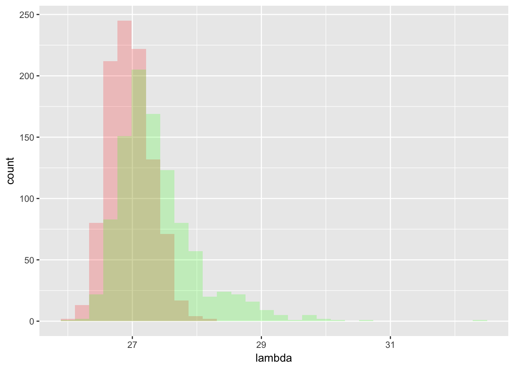

Last updated: 2017-09-16
Code version: 8482f70
library(flashr2)
library(MASS)######## spiked covariance model
set.seed(99)
T = 1000
lambda_3 = rep(NA,T)
flash_rank_3= rep(1,T)
for(t in 1:T){
P = 300
N = 100
Sigma_0 = diag(rep(1,P))
X = mvrnorm(n = N,mu = rep(0,P), Sigma = Sigma_0)
lambda_3[t] = svd(X)$d[1]
data = set_flash_data(X)
g1= flash_r1(data,verbose=F)
if(sum(g1$EL) ==0 ) {flash_rank_3[t] = 0}
}
set.seed(99)
T = 1000
lambda_4 = rep(NA,T)
flash_rank_4= rep(1,T)
for(t in 1:T){
P = 300
N = 100
Sigma_0 = diag(rep(1,P))
nu = rnorm(P, 0, (6)/(sqrt(P)))
index_nu = sample(seq(1:P),(P*0.95))
nu[index_nu] = 0
Sigma_1 = Sigma_0 + nu %*% t(nu)
X = mvrnorm(n = N,mu = rep(0,P), Sigma = Sigma_1)
lambda_4[t] = svd(X)$d[1]
data = set_flash_data(X)
g1= flash_r1(data,verbose=F)
if(sum(g1$EL) ==0 ) {flash_rank_4[t] = 0}
}
lambda_4_0 = lambda_4[which(flash_rank_4 ==0)]
lambda_4_1 = lambda_4[which(flash_rank_4 ==1)]
library(ggplot2)
dat = data.frame(lambda = c(lambda_3,lambda_4_0,lambda_4_1), name = c(rep("null",length(lambda_3)), rep("alt 0", length(lambda_4_0)),rep("alt 1", length(lambda_4_1)) ))
ggplot(dat,aes(x=lambda)) +
geom_histogram(data=subset(dat,name == 'null'),fill = "red", alpha = 0.2) +
# geom_histogram(data=subset(dat,name == 'alt 0'),fill = "blue", alpha = 0.2) +
geom_histogram(data=subset(dat,name %in% c('alt 1','alt 0')),fill = "green", alpha = 0.2)`stat_bin()` using `bins = 30`. Pick better value with `binwidth`.
`stat_bin()` using `bins = 30`. Pick better value with `binwidth`.-red: null -green: alternative
library(ggplot2)
dat = data.frame(lambda = c(lambda_3,lambda_4_0,lambda_4_1), name = c(rep("null",length(lambda_3)), rep("alt 0", length(lambda_4_0)),rep("alt 1", length(lambda_4_1)) ))
ggplot(dat,aes(x=lambda)) +
geom_histogram(data=subset(dat,name == 'null'),fill = "red", alpha = 0.2) +
geom_histogram(data=subset(dat,name == 'alt 0'),fill = "blue", alpha = 0.2) +
geom_histogram(data=subset(dat,name == 'alt 1'),fill = "green", alpha = 0.2)`stat_bin()` using `bins = 30`. Pick better value with `binwidth`.
`stat_bin()` using `bins = 30`. Pick better value with `binwidth`.
`stat_bin()` using `bins = 30`. Pick better value with `binwidth`.
-red: null -green: alternative estimated as rank 1 -bule: alternative estimated as rank 0
sessionInfo()R version 3.3.0 (2016-05-03)
Platform: x86_64-apple-darwin13.4.0 (64-bit)
Running under: OS X 10.12.6 (unknown)
locale:
[1] en_US.UTF-8/en_US.UTF-8/en_US.UTF-8/C/en_US.UTF-8/en_US.UTF-8
attached base packages:
[1] stats graphics grDevices utils datasets methods base
other attached packages:
[1] ggplot2_2.2.1 MASS_7.3-47 workflowr_0.4.0 rmarkdown_1.6
[5] softImpute_1.4 Matrix_1.2-11 PMA_1.0.9 impute_1.48.0
[9] plyr_1.8.4 flashr2_0.1-2
loaded via a namespace (and not attached):
[1] Rcpp_0.12.12 git2r_0.19.0 iterators_1.0.8
[4] tools_3.3.0 digest_0.6.12 evaluate_0.10.1
[7] tibble_1.3.3 gtable_0.2.0 lattice_0.20-35
[10] rlang_0.1.2 foreach_1.4.3 rstudioapi_0.6
[13] yaml_2.1.14 parallel_3.3.0 stringr_1.2.0
[16] knitr_1.17 REBayes_0.85 rprojroot_1.2
[19] grid_3.3.0 irlba_2.2.1 flashr_0.1.1
[22] ashr_2.1-25 magrittr_1.5 scales_0.4.1
[25] backports_1.1.0 codetools_0.2-15 htmltools_0.3.6
[28] assertthat_0.2.0 colorspace_1.3-2 labeling_0.3
[31] stringi_1.1.5 Rmosek_7.1.2 lazyeval_0.2.0
[34] pscl_1.4.9 doParallel_1.0.10 munsell_0.4.3
[37] truncnorm_1.0-7 SQUAREM_2016.8-2 This R Markdown site was created with workflowr